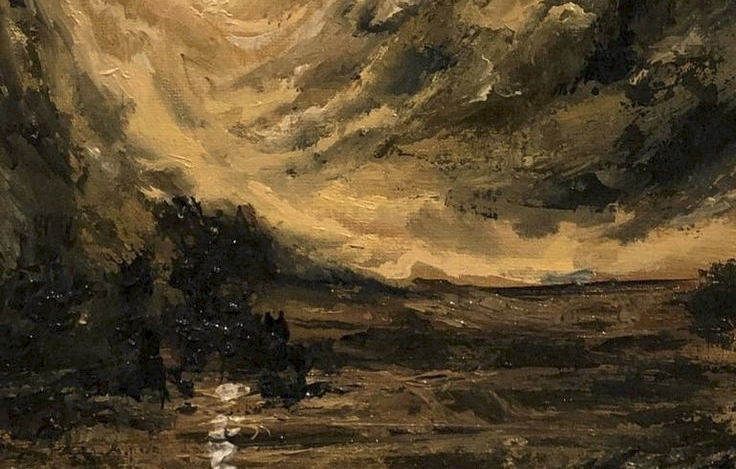

-
painting
Painting is an important form of visual art, bringing in elements such as drawing, composition, gesture, narration, and abstraction.Paintings can be naturalistic and representational (as in still life and landscape painting), photographic, abstract, narrative, symbolistic (as in Symbolist art), emotive (as in Expressionism) or political in nature (as in Artivism). A portion of the history of painting in both Eastern and Western art is dominated by religious art. Examples of this kind of painting range from artwork depicting mythological figures on pottery, to Biblical scenes on the Sistine Chapel ceiling, to scenes from the life of Buddha (or other images of Eastern religious origin).
some types of painting
Watercolor is a painting method in which the paints are made of pigments suspended in a water-soluble vehicle. The traditional and most common support for watercolor paintings i watercolor painting with inks is referred t Ethiopia and other countries also have long traditions. There are various types of watercolors used by artists. Some examples are pan watercolors, liquid watercolors, watercolor brush pens, and watercolor pencils. Watercolor pencils (water-soluble color pencils) may be used either wet or dry
Gouache is a water-based paint consisting of pigment and other materials designed to be used in an opaque painting method Gouache differs from watercolor in that the particles are larger, the ratio of pigment to water is much higher, and an additional, inert, white pigment such as chalk is also present. This makes gouache heavier and more opaque, with greater reflective qualities. Like all water media, it is diluted with water.,Painters such as This paint is best applied with sable brushes